Ringo Starr rejoins the Beatles at Abbey Road
Twelve days after walking out of the White Album sessions, Ringo Starr returned to Abbey Road to find his drum kit buried in flowers, George Harrison's welcome-home surprise.
The reunited band spent that evening starting work on Harrison's While My Guitar Gently Weeps, one of the album's defining tracks.
MGM releases Elvis's The Trouble with Girls nationwide
MGM put Elvis Presley's 30th film, The Trouble with Girls (And How to Get Into It), into theaters across the country, just three days after he wrapped his triumphant comeback engagement at the International Hotel in Las Vegas.
The 1920s period comedy, co-starring Vincent Price, marked the last stop of Presley's acting career before he turned his full attention back to live touring.
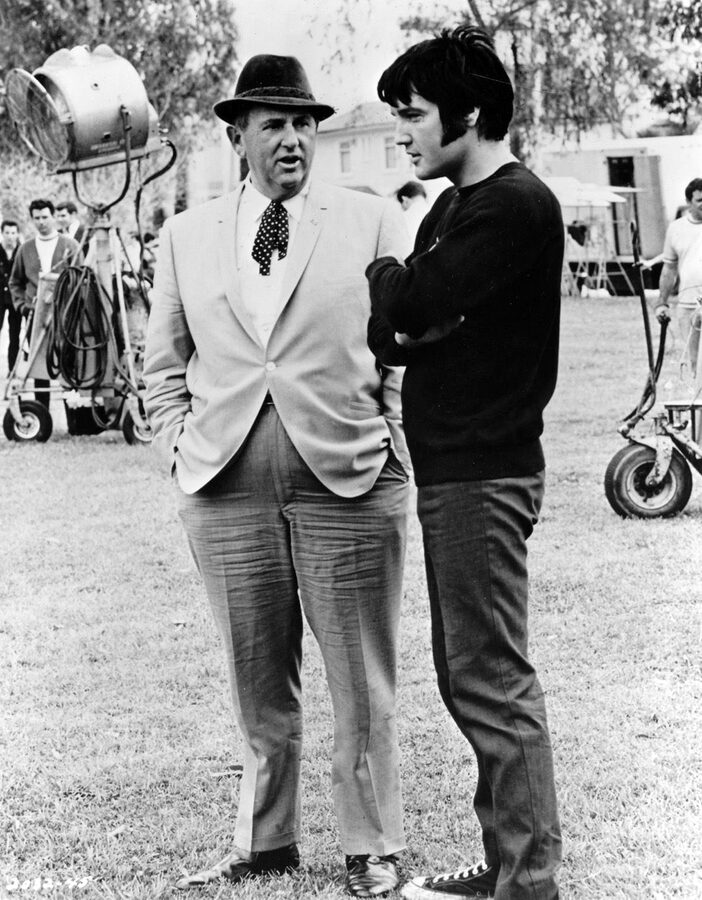
Gary Burton Sextet tracks Good Vibes at Atlantic Studios
Vibraphonist Gary Burton's sextet, stacked with session heavyweights Richard Tee, Eric Gale, Chuck Rainey, and Bernard Purdie, was in the middle of a three-day run at Atlantic Recording Studios in New York cutting material for the album Good Vibes.
The sessions fused jazz vibraphone with deep R&B session muscle, producing tracks like Leroy the Magician that became a highlight of Burton's fusion-leaning 1970 release.
Duke Ellington cuts A Taste of Honey for Reader's Digest
Duke Ellington and his orchestra recorded a big-band arrangement of A Taste of Honey at RCA Studio C in New York, part of a multi-day session commissioned by Reader's Digest.
The sessions reworked contemporary pop and film standards into Ellington's orchestral style, a showcase of his restless late-career output.
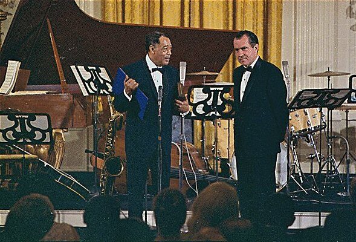
Ringo Starr rejoins the Beatles at Abbey Road
Twelve days after walking out of the White Album sessions, Ringo Starr returned to Abbey Road to find his drum kit buried in flowers, George Harrison's welcome-home surprise, per The Beatles Bible.
The reunited Beatles spent that evening starting work on Harrison's While My Guitar Gently Weeps, one of the album's defining tracks.
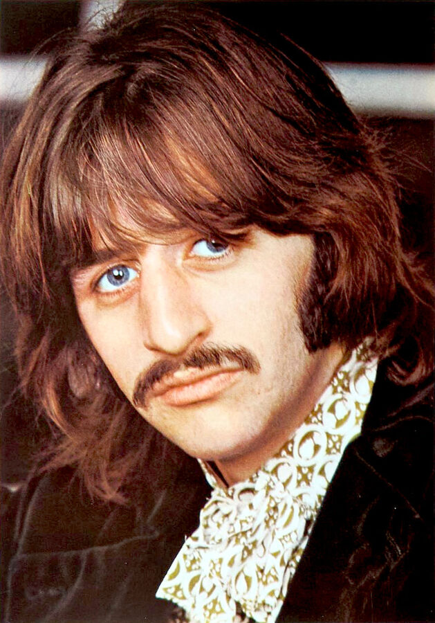
Elvis releases A Little Less Conversation
RCA Victor released Elvis Presley's Almost in Love / A Little Less Conversation single, written by Mac Davis and Billy Strange for the film Live a Little, Love a Little.
The groovy, brass-driven track was only a minor hit at the time, peaking at No. 69, but a 2002 remix by Dutch DJ Junkie XL turned it into a global No. 1 more than three decades later.
Anni-Frid Lyngstad wins Sweden's New Faces talent contest
A young Anni-Frid Lyngstad won the Nya Ansikten (New Faces) talent competition at Skansen in Stockholm, singing En Ledig Dag, and appeared on the country's biggest TV show, Hylands Hörna, that same evening.
The win came with a recording contract from EMI Sweden, launching the career of the singer who would become Frida of ABBA.
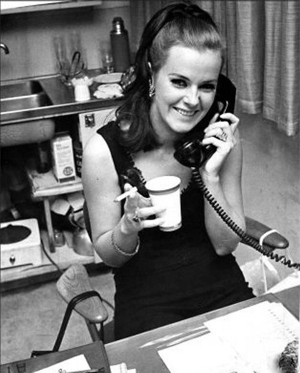
The Who play the Ohio State Fairgrounds
The Who performed at the Ohio State Fairgrounds in Columbus during a multi-night run, one stop on their first US tour opening for Herman's Hermits.
The tour introduced American audiences to Pete Townshend's feedback-drenched guitar work and Keith Moon's explosive drumming for the first time.
Grateful Dead play the Rio Nido Dance Hall
The Grateful Dead played the Dance Hall in Rio Nido, California, delivering a sprawling, 31-minute take on In the Midnight Hour anchored by Pigpen's frontman charisma.
The performance later surfaced on the live compilation album Fallout from the Phil Zone, a favorite among tape traders for its raw, early-era intensity.
Cream close their second Fillmore residency
Cream wrapped a second run of shows at San Francisco's Fillmore Auditorium, sharing the bill with the Electric Flag and vibraphonist Gary Burton during the Summer of Love.
The venue's legal capacity was 900, but as many as 1,500 fans reportedly packed in, cementing Cream's reputation as the era's premier live power trio.
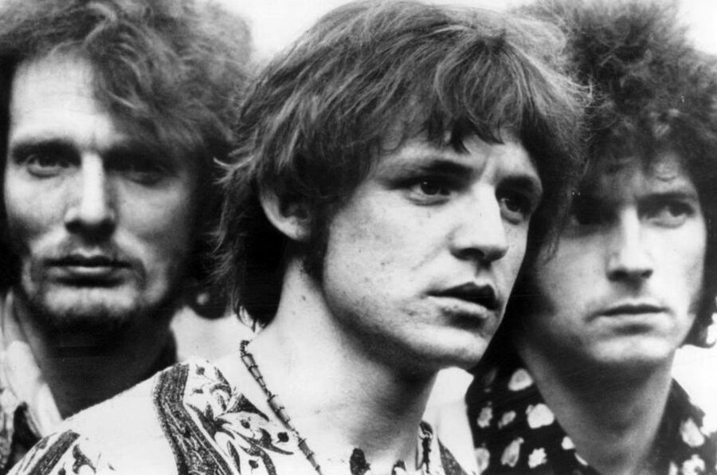
Donovan's Sunshine Superman hits No. 1
Donovan's psychedelic-pop single Sunshine Superman vaulted to No. 1 on the Billboard Hot 100, his only chart-topper in the United States.
The track's swinging arrangement featured session guitarist Jimmy Page and bassist John Paul Jones, two future Led Zeppelin bandmates playing together years before that group existed.
96 Tears debuts on the Billboard Hot 100
Question Mark and the Mysterians' raw, Farfisa-organ garage rock single 96 Tears entered the Billboard Hot 100 at No. 75.
The DIY regional hit climbed to No. 1 by late October, its hypnotic organ riff and low-budget attitude later cited as an early blueprint for punk rock.
Jimmy Page fronts the Yardbirds without an ailing Jeff Beck
The Yardbirds played the Salem Armory during the Oregon State Fair as a four-piece, with Jimmy Page carrying lead guitar alone after Jeff Beck was hospitalized with meningitis and tonsillitis the day before.
The show was an early proving ground for Page as a frontline lead player, months before he would take over the band outright.
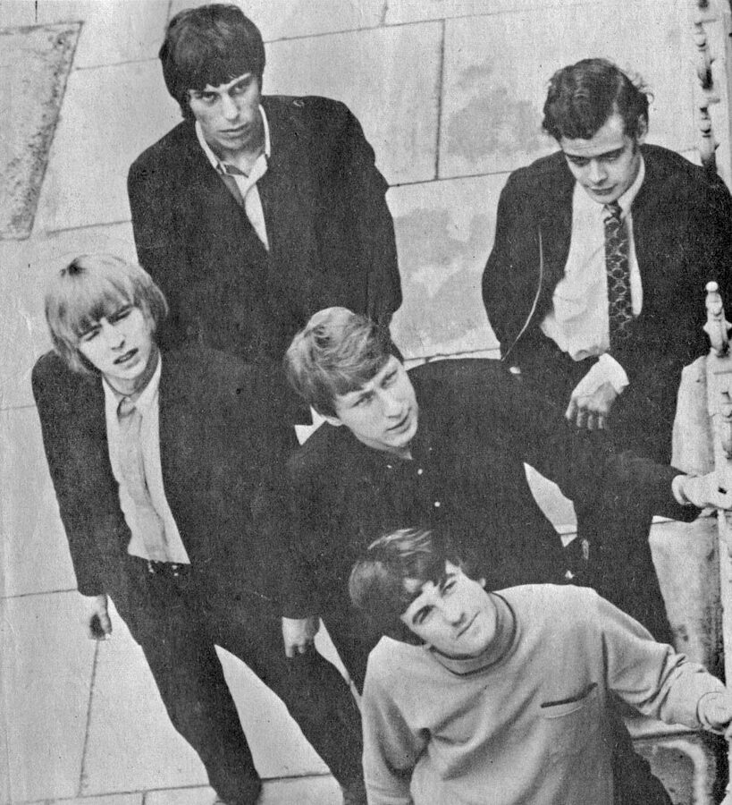
The Who play the Drill Hall in Grantham
The Who played a gig at the Drill Hall in Grantham, Lincolnshire, part of the relentless UK club circuit that defined the band's mid-1960s mod years.
Shows like this one built the volatile, instrument-smashing reputation that would soon carry the band across the Atlantic.
John Coltrane and Sonny Fortune play a benefit at the Church of the Advocate
John Coltrane's quartet played a benefit concert for the Black People's Unity Movement at the Church of the Advocate in North Philadelphia, a show reserved for the local Black community after saxophonist Sonny Fortune opened, per Lewis Porter.
It came a night after a Stokely Carmichael address in the same church, tying Coltrane's avant-garde jazz directly to the era's Black Power movement.
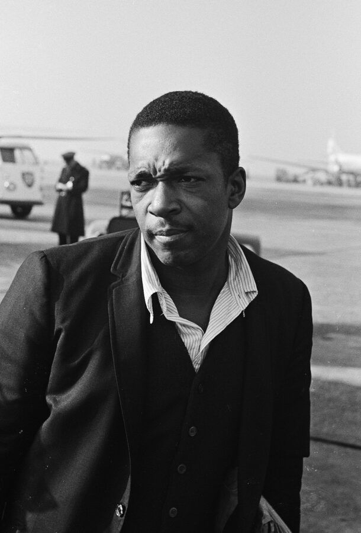
Bob Dylan goes electric at the Hollywood Bowl
Bob Dylan made his Hollywood Bowl debut with a two-part set, opening solo and acoustic before plugging in for an electric second half backed by Robbie Robertson, Al Kooper, Harvey Brooks, and Levon Helm, per bobdylan.com.
Coming six weeks after his controversial electric turn at Newport, the Bowl crowd proved far more receptive, closing the night with Like a Rolling Stone.
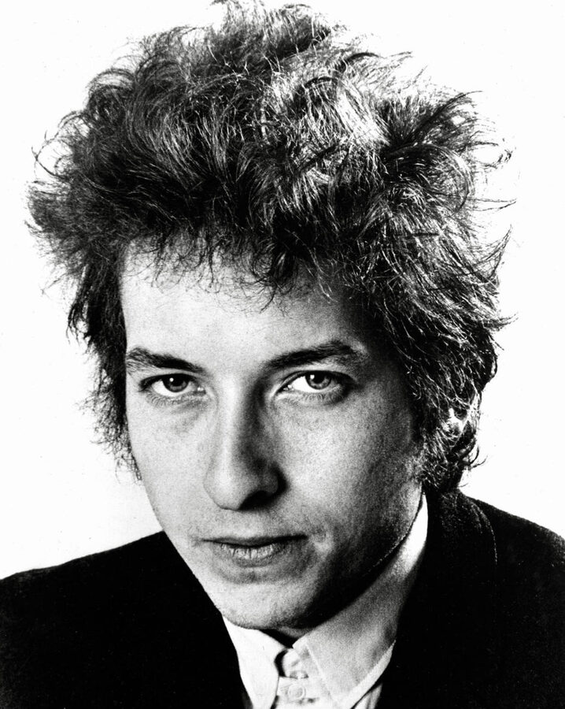
A Rolling Stones show in Dublin ends in a riot
The Rolling Stones' show at the Adelphi Cinema in Dublin was cut short after just three songs when fans rushed the stage, knocking Mick Jagger to the floor and forcing the band to flee.
Filmmaker Peter Whitehead captured the chaos on camera, and the footage became a centerpiece of his tour documentary Charlie Is My Darling, per Hotpress.
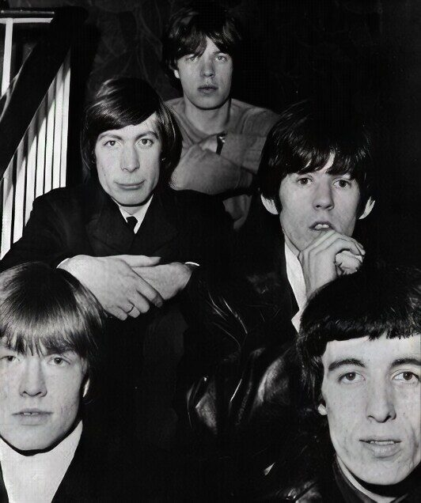
Lou Christie records Lightnin' Strikes
Lou Christie cut his falsetto-driven signature hit Lightnin' Strikes at Olmstead Recording Studios in New York, produced and arranged by Charles Calello.
Session guitarist Ralph Casale's stuttering, overdubbed solo became the track's most memorable hook, helping push the single to No. 1 in early 1966.
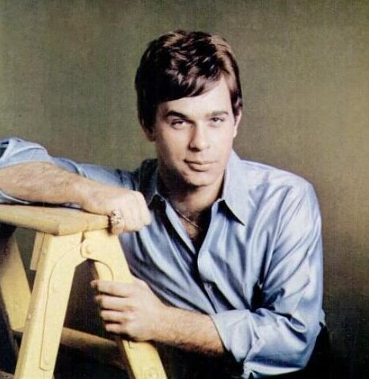
The Beatles play two sold-out Indiana State Fair shows
The Beatles performed two sold-out shows at the Indiana State Fair in Indianapolis, one inside the Coliseum and one outdoors at the Grandstand, drawing a combined 29,337 fans, per The Beatles Bible.
Opening acts Jackie DeShannon, Clarence "Frogman" Henry, the Exciters, and the Bill Black Combo filled out the bill on this stop of the band's first full North American tour.
The Albert Ayler Quartet tapes a landmark set in Copenhagen
Saxophonist Albert Ayler, with Don Cherry, Gary Peacock, and Sunny Murray, played an intense live set at Copenhagen's Club Montmartre that was professionally recorded.
The tapes captured Ayler at the vanguard of free jazz and were later released as The Copenhagen Tapes, a document of one of the genre's most radical quartets.
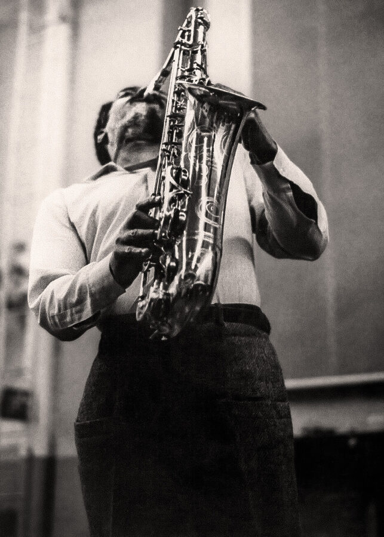
The Beatles tape 19 songs in a single BBC marathon
The Beatles spent a full day at the BBC's Aeolian Hall recording three complete episodes of Pop Go the Beatles, taping 19 songs including She Loves You, I'll Get You, and a rare cover of Little Richard's Lucille.
The raw, high-volume session captured the band at full steam just months before Beatlemania broke internationally, with several tracks later surfacing on Live at the BBC.
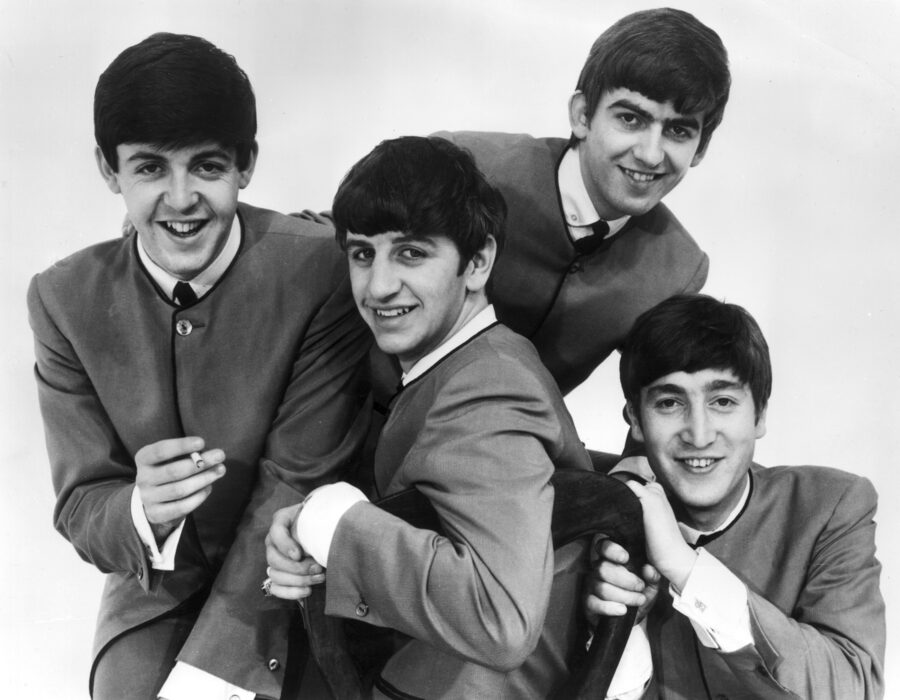
The Beatles play Widnes for the first time
The Beatles made their first appearance in Widnes with a Monday night show at Queen's Hall, the first of five NEMS-promoted dates the band would play at the venue, per setlist.fm.
Ringo Starr, just weeks into the band as their permanent drummer, would join John, Paul, and George at Abbey Road the very next day to record Love Me Do for the first time with him behind the kit.
Judy Garland returns to Atlantic City for one night
Judy Garland played a single, sold-out concert at the Convention Hall Ballroom in Atlantic City, months after her legendary Judy at Carnegie Hall show that April, per The Judy Room.
Fans who couldn't get inside gathered in the parking lot to hear her sing Over the Rainbow drifting out from the hall, a testament to her drawing power during her early-1960s comeback.
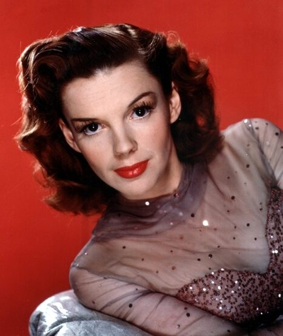
Patsy Cline sings on the Grand Ole Opry's Prince Albert segment
Patsy Cline, recently made an Opry member, sang There He Goes and Crazy Dreams on the Prince Albert segment of the Grand Ole Opry at the Ryman Auditorium, hosted by Jim Reeves alongside Chet Atkins, June Carter, and Floyd Cramer, per the Country Music Hall of Fame.
The tobacco-sponsored broadcast gave Cline a national radio platform just as her career was taking off.
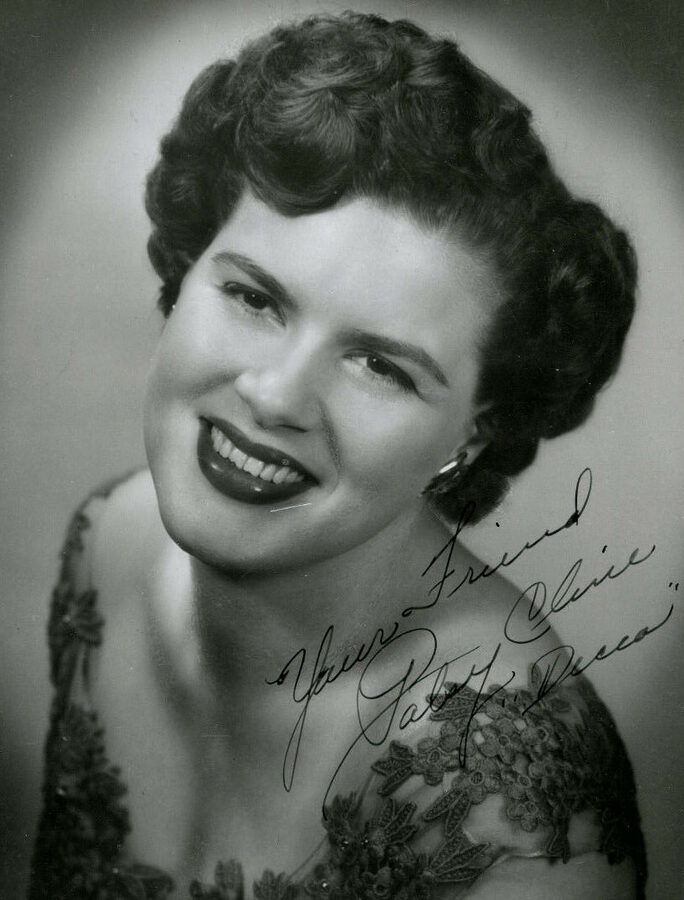
Frequently Asked Questions
What happened in 1960s music on September 3?
September 3 saw 23 verified music events across the decade.
They're headlined by Ringo Starr's 1968 return to the Beatles after quitting the White Album sessions, plus Bob Dylan's electric Hollywood Bowl debut, a Rolling Stones riot in Dublin, and Donovan's only US number-one hit.
What is the biggest 1960s music event on September 3?
Ringo Starr rejoining the Beatles at Abbey Road on September 3, 1968, stands as the day's biggest event.
It came 12 days after he walked out of the tense White Album sessions, greeted by a drum kit George Harrison had covered in flowers.
Did the Beatles do anything on September 3?
Yes, in four different years.
The Beatles played Widnes for the first time in 1962, taped 19 songs in a single BBC marathon in 1963, played two sold-out Indiana State Fair shows in 1964, and Ringo Starr rejoined the band in 1968.
What songs hit number one on September 3 in the 1960s?
Donovan's Sunshine Superman reached No. 1 on the Billboard Hot 100 on September 3, 1966, his only US chart-topper.
The track featured session guitarist Jimmy Page, years before Led Zeppelin existed.
Which ABBA member has a connection to September 3?
Anni-Frid Lyngstad, who became Frida of ABBA, won Sweden's Nya Ansikten (New Faces) talent contest on September 3, 1967.
The win earned her a recording contract with EMI Sweden and a same-night TV appearance on Hylands Hörna.
Did the Rolling Stones do anything notable on September 3?
Yes. On September 3, 1965, the Rolling Stones' show at Dublin's Adelphi Cinema ended in a riot.
Fans rushed the stage after just three songs, knocking Mick Jagger to the floor and forcing the band to flee.